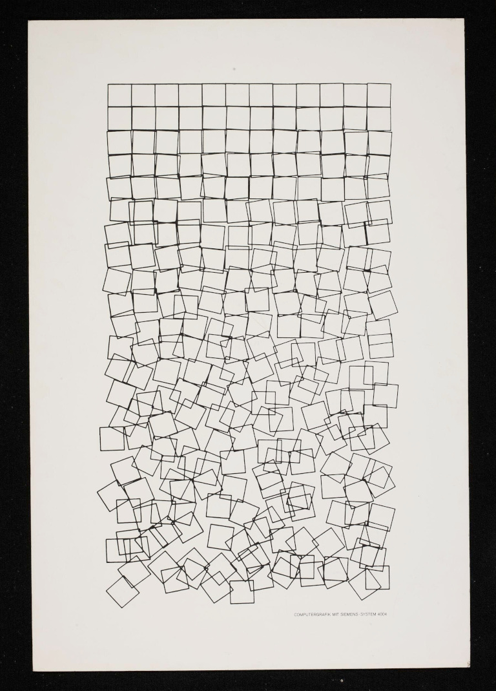
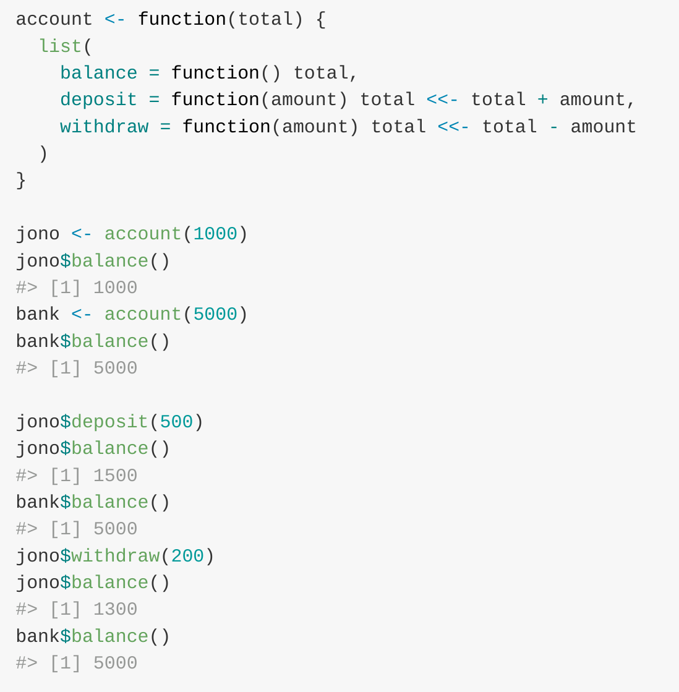
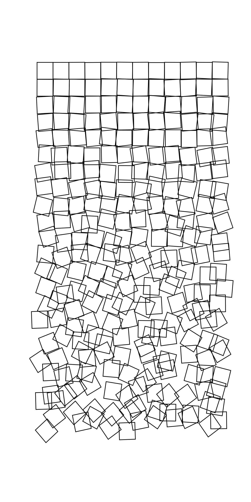
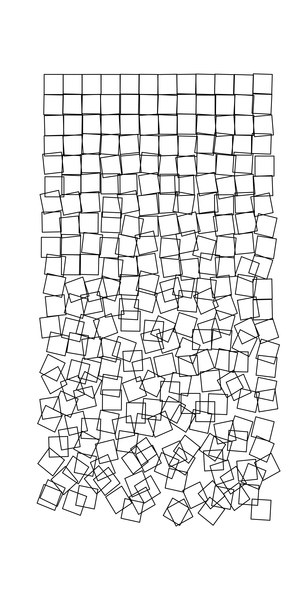
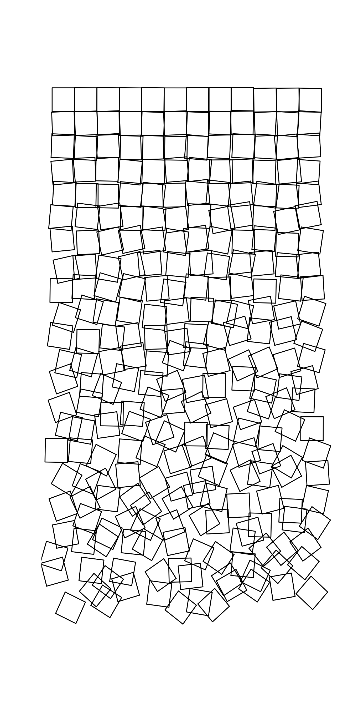
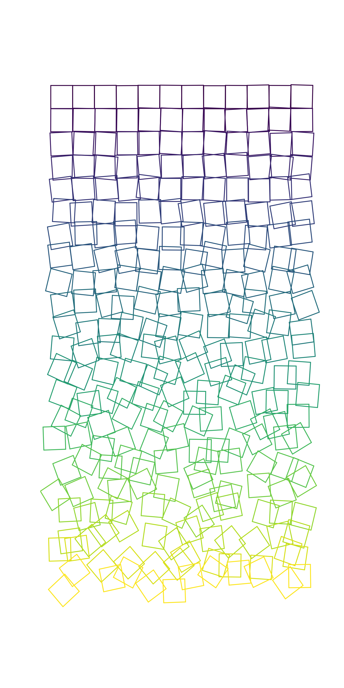
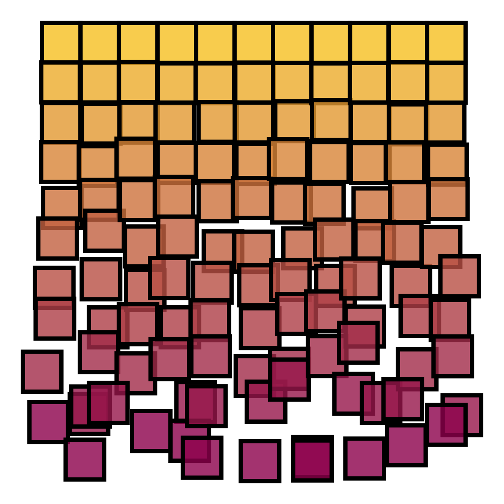
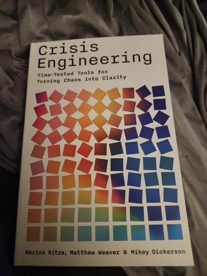

Translating things between languages reveals how each language approaches different design trade-offs, and I believe it’s a useful exercise. Having something to translate is the first step. I found a plot I wanted to generate, and some code that reproduced it, so off we go!
Translating things between languages reveals how each language approaches different design trade-offs, and I believe it’s a useful exercise. Having something to translate is the first step. I found a plot I wanted to generate, and some code that reproduced it, so off we go!
I don’t recall how I originally found this page (I didn’t keep a note on it, it seems) and this has been sitting on my to-be-posted-about pile for way too long, so here’s the post I’ve been meaning to write.
That post details some ALGOL code that generates Georg Nees’ “Schotter” computer-generated art from 1968 which shows a grid of squares which get increasingly displaced in position and rotation
1 'BEGIN''COMMENT'SCHOTTER.,
2 'REAL'R,PIHALB,PI4T.,
3 'INTEGER'I.,
4 'PROCEDURE'QUAD.,
5 'BEGIN'
6 'REAL'P1,Q1,PSI.,'INTEGER'S.,
7 JE1.=5*1/264.,JA1.=-JE1.,
8 JE2.=PI4T*(1+I/264).,JA2.=PI4T*(1-I/264).,
9 P1.=P+5+J1.,Q1.=Q+5+J1.,PS1.=J2.,
10 LEER(P1+R*COS(PSI),Q1+R*SIN(PSI)).,
11 'FOR'S.=1'STEP'1'UNTIL'4'DO'
12 'BEGIN'PSI.=PSI+PIHALB.,
13 LINE(P1+R*COS(PSI),Q1+R*SIN(PSI)).,
14 'END".,I.=I+1
15 'END'QUAD.,
16 R.=5*1.4142.,
17 PIHALB.=3.14159*.5.,P14T.=PIHALB*.5.,
18 I.=0.,
19 SERIE(10.0,10.0,22,12,QUAD)
20 'END' SCHOTTER.,
1 'REAL'P,Q,P1,Q1,XM,YM,HOR,VER,JLI,JRE,JUN,JOB.,
5 'INTEGER'I,M,M,T.,
7 'PROCEDURE'SERIE(QUER,HOCH,XMAL,YMAL,FIGUR).,
8 'VALUE'QUER,HOCH,XMAL,YMAL.,
9 'REAL'QUER,HOCH.,
10 'INTEGER'XMAL,YMAL.,
11 'PROCEDURE'FIGUR.,
12 'BEGIN'
13 'REAL'YANF.,
14 'INTEGER'COUNTX,COUNTY.,
15 P.=-QUER*XMAL*.5.,
16 Q.=YANF.=-HOCH*YMAL*.5.,
17 'FOR'COUNTX.=1'STEP'1'UNTIL'XMAL'DO'
18 'BEGIN'Q.=YANF.,
19 'FOR'COUNTY.=1'STEP'1'UNTIL'YMAL'DO'
20 'BEGIN'FIGUR.,Q.=Q+HOCH
21 'END'.,P.=P+QUER
22 'END'.,
23 LEER(-148.0,-105.0).,CLOSE.,
24 SONK(11).,
25 OPBEN(X,Y)
26 'END'SERIE.,
What’s missing from this ALGOL code is the seeds needed to reproduce the plot. The author went down a rabbit hole investigating and calculating different values, but managed to determine them to be “(1922110153) for the x- and y-shift seed, and (1769133315) for the rotation seed”. They also provided a translation into Python
import math
import drawsvg as draw
class Random:
def __init__(self, seed):
self.JI = seed
def next(self, JA, JE):
self.JI = (self.JI * 5) % 2147483648
return self.JI / 2147483648 * (JE-JA) + JA
def draw_square(g, x, y, i, r1, r2):
r = 5 * 1.4142
pi = 3.14159
move_limit = 5 * i / 264
twist_limit = pi/4 * i / 264
y_center = y + 5 + r1.next(-move_limit, move_limit)
x_center = x + 5 + r1.next(-move_limit, move_limit)
angle = r2.next(pi/4 - twist_limit, pi/4 + twist_limit)
p = draw.Path()
p.M(x_center + r * math.sin(angle), y_center + r * math.cos(angle))
for step in range(4):
angle += pi / 2
p.L(x_center + r * math.sin(angle), y_center + r * math.cos(angle))
g.append(p)
def draw_plot(x_size, y_size, x_count, y_count, s1, s2):
r1 = Random(s1)
r2 = Random(s2)
d = draw.Drawing(180, 280, origin='center', style="background-color:#eae6e2")
g = draw.Group(stroke='#41403a', stroke_width='0.4', fill='none',
stroke_linecap="round", stroke_linejoin="round")
y = -y_size * y_count * 0.5
x0 = -x_size * x_count * 0.5
i = 0
for _ in range(y_count):
x = x0
for _ in range(x_count):
draw_square(g, x, y, i, r1, r2)
x += x_size
i += 1
y += y_size
d.append(g)
return d
d = draw_plot(10.0, 10.0, 12, 22, 1922110153, 1769133315).set_render_size(w=500)
print(d.as_svg())I wanted to see if I could also translate that to R – base plot can draw line
segments just fine, and I was curious about colouring the squares my own way.
Most of that code translates straightforwardly, with the exception that the
‘randomness’ is actually a sequence of values, starting with a specific seed. I
tooted recently about
an older post of mine which (ab)uses
the set.seed() function to generate specific ‘random’ words
printStr <- function(str) paste(str, collapse="")
set.seed(2505587); x <- sample(LETTERS, 5, replace=TRUE)
set.seed(11135560);y <- sample(LETTERS, 5, replace=TRUE)
paste(printStr(x), printStr(y))## [1] "HELLO WORLD"which I was inspired to revisit based on a post by Andrew Heiss.
The Random class in that Python translation produces an iterator which
returns a ‘next’ value each time it’s called with a specific ‘seed’ and
two values
class Random:
def __init__(self, seed):
self.JI = seed
def next(self, JA, JE):
self.JI = (self.JI * 5) % 2147483648
return self.JI / 2147483648 * (JE-JA) + JA
r = Random(1)
r.next(2, 3)## 2.0000000023283064r.next(2, 3)## 2.000000011641532r.next(2, 3)## 2.000000058207661with the added complexity that the subsequent calls update the seed itself.
When I first saw this I was taken back to reading the
“original” R paper
‘R: A Language for Data Analysis and Graphics’ by Ross Ihaka and Robert Gentleman,
in which
I recalled seeing the cool example of an OO system
maintaining a (non-global) state via <<-

With this same trick we can write an equivalent of the Random class which also
updates the seed internally
random <- function(seed) {
list(
nextval = function(a, b) {
seed <<- (seed * 5) %% 2147483648
seed / 2147483648 * (b-a) + a
}
)
}
r <- random(1)
print(r$nextval(2, 3), digits = 16)## [1] 2.000000002328306print(r$nextval(2, 3), digits = 16)## [1] 2.000000011641532print(r$nextval(2, 3), digits = 16)## [1] 2.000000058207661Cool!
The rest of the translation is mostly aligning to base plot syntax.
This is what I ended up with
draw_square <- function(x, y, i, r1, r2, col) {
r = 5 * 1.4142
move_limit = 5 * i / 264
twist_limit = pi/4 * i / 264
y_center = y + 5 + r1$nextval(-move_limit, move_limit)
x_center = x + 5 + r1$nextval(-move_limit, move_limit)
angle = r2$nextval(pi/4 - twist_limit, pi/4 + twist_limit)
x0 <- x_center + r * sin(angle)
y0 <- y_center + r * cos(angle)
for (step in 1:4) {
angle <- angle + pi / 2
x1 <- x_center + r * sin(angle)
y1 <- y_center + r * cos(angle)
segments(x0, y0, x1, y1, lwd = 1.75, col = col)
x0 <- x1
y0 <- y1
}
}
draw_plot <- function(x_size, y_size, x_count, y_count, s1, s2) {
r1 = random(s1)
r2 = random(s2)
plot(NULL, NULL, xlim = c(-60, 60), ylim = c(120, -120), axes = FALSE, ann = FALSE)
y = -y_size * y_count * 0.5
x0 = -x_size * x_count * 0.5
i = 0
for (z in 1:y_count) {
x = x0
for (zz in 1:x_count) {
draw_square(x, y, i, r1, r2, "black")
x <- x + x_size
i <- i + 1
}
y <- y + y_size
}
}
draw_plot(10.0, 10.0, 12, 22, 1922110153, 1769133315)
Figure 1: ‘Schotter’ in R
Which uses the special seeds discovered in that original post. Checking the rotations, this does indeed appear to match the original art.
Why stop there, though? Now that I can plot it, I can change things… what if I used a different set of seeds, e.g. swapped them?
draw_plot(10.0, 10.0, 12, 22, 1769133315, 1922110153)
Figure 2: ‘Schotter’ in R with swapped seeds
or completely different values?
draw_plot(10.0, 10.0, 12, 22, 12345, 67890)
Figure 3: ‘Schotter’ in R with new seeds
What about changing the colours? I could plot the colour as a function of the progression down the grid, which I think looks pretty cool.
draw_plot <- function(x_size, y_size, x_count, y_count, s1, s2) {
r1 = random(s1)
r2 = random(s2)
plot(NULL, NULL, xlim = c(-60, 60), ylim = c(120, -120), axes = FALSE, ann = FALSE)
y = -y_size * y_count * 0.5
x0 = -x_size * x_count * 0.5
i = 0
for (z in 1:y_count) {
x = x0
rcol <- scales::viridis_pal(option = "viridis")(y_count)[z]
for (zz in 1:x_count) {
draw_square(x, y, i, r1, r2, rcol)
x <- x + x_size
i <- i + 1
}
y <- y + y_size
}
}
draw_plot(10.0, 10.0, 12, 22, 1922110153, 1769133315)
Figure 4: ‘Schotter’ in R with viridis colours
Ever since I first drafted this post, I’ve seen other examples of similar work. This toot demonstrated a simplified version
suppressPackageStartupMessages(library(tidyverse))
crossing(x=0:10, y=x) |>
mutate(dx = rnorm(n(), 0, (y/20)^1.5),
dy = rnorm(n(), 0, (y/20)^1.5)) |>
ggplot() +
geom_tile(aes(x=x+dx, y=y+dy, fill=y), colour='black',
lwd=2, width=1, height=1, alpha=0.8, show.legend=FALSE) +
scale_fill_gradient(high='#9f025e', low='#f9c929') +
scale_y_reverse() + theme_void()
Figure 5: https://mastodon.social/@safest_integer/114296256313964335
while this one showed a book ‘Crisis Engineering’ with a similar idea

I’m sure I’ve seen others around, too.
This was a fun exploration of some artistically inspired code translation, and I got to stretch my ‘maintaining internal state’ muscles a little. I have no doubt that someone more artistic than I could do a lot more with it.
As always, I can be found on Mastodon and the comment section below.
## ─ Session info ───────────────────────────────────────────────────────────────
## setting value
## version R version 4.5.3 (2026-03-11)
## os macOS Tahoe 26.3.1
## system aarch64, darwin20
## ui X11
## language (EN)
## collate en_US.UTF-8
## ctype en_US.UTF-8
## tz Australia/Adelaide
## date 2026-04-17
## pandoc 3.6.3 @ /Applications/RStudio.app/Contents/Resources/app/quarto/bin/tools/aarch64/ (via rmarkdown)
## quarto 1.7.31 @ /usr/local/bin/quarto
##
## ─ Packages ───────────────────────────────────────────────────────────────────
## package * version date (UTC) lib source
## blogdown 1.23 2026-01-18 [1] CRAN (R 4.5.2)
## bookdown 0.46 2025-12-05 [1] CRAN (R 4.5.2)
## bslib 0.10.0 2026-01-26 [1] CRAN (R 4.5.2)
## cachem 1.1.0 2024-05-16 [1] CRAN (R 4.5.0)
## cli 3.6.5 2025-04-23 [1] CRAN (R 4.5.0)
## devtools 2.4.6 2025-10-03 [1] CRAN (R 4.5.0)
## digest 0.6.39 2025-11-19 [1] CRAN (R 4.5.2)
## dplyr * 1.2.0 2026-02-03 [1] CRAN (R 4.5.2)
## ellipsis 0.3.2 2021-04-29 [1] CRAN (R 4.5.0)
## evaluate 1.0.5 2025-08-27 [1] CRAN (R 4.5.0)
## farver 2.1.2 2024-05-13 [1] CRAN (R 4.5.0)
## fastmap 1.2.0 2024-05-15 [1] CRAN (R 4.5.0)
## forcats * 1.0.1 2025-09-25 [1] CRAN (R 4.5.0)
## fs 1.6.7 2026-03-06 [1] CRAN (R 4.5.2)
## generics 0.1.4 2025-05-09 [1] CRAN (R 4.5.0)
## ggplot2 * 4.0.2 2026-02-03 [1] CRAN (R 4.5.2)
## glue 1.8.0 2024-09-30 [1] CRAN (R 4.5.0)
## gtable 0.3.6 2024-10-25 [1] CRAN (R 4.5.0)
## hms 1.1.4 2025-10-17 [1] CRAN (R 4.5.0)
## htmltools 0.5.9 2025-12-04 [1] CRAN (R 4.5.2)
## jquerylib 0.1.4 2021-04-26 [1] CRAN (R 4.5.0)
## jsonlite 2.0.0 2025-03-27 [1] CRAN (R 4.5.0)
## knitr 1.51 2025-12-20 [1] CRAN (R 4.5.2)
## labeling 0.4.3 2023-08-29 [1] CRAN (R 4.5.0)
## lattice 0.22-9 2026-02-09 [1] CRAN (R 4.5.3)
## lifecycle 1.0.5 2026-01-08 [1] CRAN (R 4.5.2)
## lubridate * 1.9.5 2026-02-04 [1] CRAN (R 4.5.2)
## magrittr 2.0.4 2025-09-12 [1] CRAN (R 4.5.0)
## Matrix 1.7-4 2025-08-28 [1] CRAN (R 4.5.3)
## memoise 2.0.1 2021-11-26 [1] CRAN (R 4.5.0)
## otel 0.2.0 2025-08-29 [1] CRAN (R 4.5.0)
## pillar 1.11.1 2025-09-17 [1] CRAN (R 4.5.0)
## pkgbuild 1.4.8 2025-05-26 [1] CRAN (R 4.5.0)
## pkgconfig 2.0.3 2019-09-22 [1] CRAN (R 4.5.0)
## pkgload 1.5.0 2026-02-03 [1] CRAN (R 4.5.2)
## png 0.1-9 2026-03-15 [1] CRAN (R 4.5.2)
## purrr * 1.2.1 2026-01-09 [1] CRAN (R 4.5.2)
## R6 2.6.1 2025-02-15 [1] CRAN (R 4.5.0)
## RColorBrewer 1.1-3 2022-04-03 [1] CRAN (R 4.5.0)
## Rcpp 1.1.1 2026-01-10 [1] CRAN (R 4.5.2)
## readr * 2.2.0 2026-02-19 [1] CRAN (R 4.5.2)
## remotes 2.5.0 2024-03-17 [1] CRAN (R 4.5.0)
## reticulate 1.45.0 2026-02-13 [1] CRAN (R 4.5.2)
## rlang 1.1.7 2026-01-09 [1] CRAN (R 4.5.2)
## rmarkdown 2.30 2025-09-28 [1] CRAN (R 4.5.0)
## rstudioapi 0.18.0 2026-01-16 [1] CRAN (R 4.5.2)
## S7 0.2.1 2025-11-14 [1] CRAN (R 4.5.2)
## sass 0.4.10 2025-04-11 [1] CRAN (R 4.5.0)
## scales 1.4.0 2025-04-24 [1] CRAN (R 4.5.0)
## sessioninfo 1.2.3 2025-02-05 [1] CRAN (R 4.5.0)
## stringi 1.8.7 2025-03-27 [1] CRAN (R 4.5.0)
## stringr * 1.6.0 2025-11-04 [1] CRAN (R 4.5.0)
## tibble * 3.3.1 2026-01-11 [1] CRAN (R 4.5.2)
## tidyr * 1.3.2 2025-12-19 [1] CRAN (R 4.5.2)
## tidyselect 1.2.1 2024-03-11 [1] CRAN (R 4.5.0)
## tidyverse * 2.0.0 2023-02-22 [1] CRAN (R 4.5.0)
## timechange 0.4.0 2026-01-29 [1] CRAN (R 4.5.2)
## tzdb 0.5.0 2025-03-15 [1] CRAN (R 4.5.0)
## usethis 3.2.1 2025-09-06 [1] CRAN (R 4.5.0)
## vctrs 0.7.1 2026-01-23 [1] CRAN (R 4.5.2)
## viridisLite 0.4.3 2026-02-04 [1] CRAN (R 4.5.2)
## withr 3.0.2 2024-10-28 [1] CRAN (R 4.5.0)
## xfun 0.56 2026-01-18 [1] CRAN (R 4.5.2)
## yaml 2.3.12 2025-12-10 [1] CRAN (R 4.5.2)
##
## [1] /Library/Frameworks/R.framework/Versions/4.5-arm64/Resources/library
## * ── Packages attached to the search path.
##
## ─ Python configuration ───────────────────────────────────────────────────────
## python: /Users/jono/.cache/uv/archive-v0/3n3euDImmjsw3EYTJjfeY/bin/python
## libpython: /Users/jono/.local/share/uv/python/cpython-3.12.12-macos-aarch64-none/lib/libpython3.12.dylib
## pythonhome: /Users/jono/.cache/uv/archive-v0/3n3euDImmjsw3EYTJjfeY:/Users/jono/.cache/uv/archive-v0/3n3euDImmjsw3EYTJjfeY
## virtualenv: /Users/jono/.cache/uv/archive-v0/3n3euDImmjsw3EYTJjfeY/bin/activate_this.py
## version: 3.12.12 (main, Oct 28 2025, 11:52:25) [Clang 20.1.4 ]
## numpy: /Users/jono/.cache/uv/archive-v0/3n3euDImmjsw3EYTJjfeY/lib/python3.12/site-packages/numpy
## numpy_version: 2.4.4
##
## NOTE: Python version was forced by VIRTUAL_ENV
##
## ──────────────────────────────────────────────────────────────────────────────